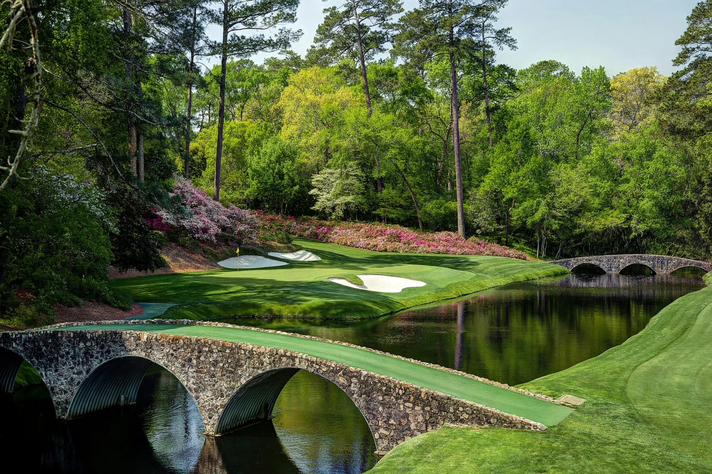

From Wikipedia, the free encyclopedia
| Augusta National Golf Club | |
|---|---|
 The 12th green at Augusta National across Rae's Creek, azaleas blooming behind the green | |
| Location | Augusta, Georgia, United States |
| Established | 1932 (opened January 1933) |
| Designers | Bobby Jones and Alister MacKenzie |
| Type | Private; 18 holes, par 72 |
| Events held | Masters Tournament; Augusta National Women's Amateur |
Augusta National Golf Club is a private golf club in Augusta, Georgia, and the permanent home of the Masters Tournament, one of professional golf's four major championships. It was founded by Bobby Jones, the era's greatest amateur golfer, and investment banker Clifford Roberts on the site of Fruitland Nurseries, a former indigo plantation and plant nursery — a heritage visible in the holes named for trees and shrubs, from Tea Olive and Pink Dogwood to the par-3 12th, Golden Bell. The course, designed by Jones with Alister MacKenzie, opened in 1933, and the first Masters followed in 1934.
Augusta National is famed for its immaculate conditioning, towering Georgia pines, blooming azaleas and the stretch of holes around Rae's Creek — the 11th, 12th and 13th — christened "Amen Corner" by writer Herbert Warren Wind in 1958. The par-5 13th and 15th offer classic risk-reward drama, while the clubhouse, reached down magnolia-lined Magnolia Lane, fronts the founders' circle. The course has been lengthened repeatedly in the modern power era to remain a championship test, and members wear the club's signature green jackets.
Membership, numbering only a few hundred, is by invitation, and the club was famously exclusive: it admitted its first Black member in 1990 and its first women members in 2012, including former Secretary of State Condoleezza Rice. Since 2019 the club has hosted the Augusta National Women's Amateur, whose final round is played on the championship course on the Saturday before the Masters. Television coverage of the Masters is produced under strict club control, with limited commercial interruption — one of the ways the club guards its mystique.
Categories: Augusta National Golf Club | Golf clubs and courses in Georgia (U.S. state) | Sports venues completed in 1933